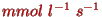
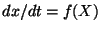
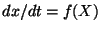
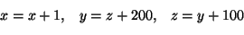

Michael Hucka, Andrew Finney, Herbert Sauro, Hamid Bolouri
{mhucka,afinney,hsauro,hbolouri}@cds.caltech.edu
Systems Biology Workbench Development Group
JST ERATO Kitano Symbiotic Systems Project
Control and Dynamical Systems, MC 107-81
California Institute of Technology, Pasadena, CA 91125, USA
http://www.cds.caltech.edu/erato
Principal Investigators: John Doyle and Hiroaki Kitano
SBML Level 1, Version 2 (Final)
28 August 2003
We present the Systems Biology Markup Language (SBML) Level 1, Version 2, a description language for simulations in systems biology. SBML is oriented towards representing biochemical networks common in research on a number of topics, including cell signaling pathways, metabolic pathways, biochemical reactions, gene regulation, and many others. A recent conference (Kitano, 2001) highlights the range of topics that fall under the umbrella of systems biology and are in the domain of the description language defined here. Many contemporary research initiatives demonstrate the growing popularity of this kind of multidisciplinary work (e.g., Smaglik, 2000a; Abbott, 1999; Smaglik, 2000b; Popel and Winslow, 1998; Gilman, 2000).
SBML Level 1 is the result of merging modeling-language features from the following simulation systems: BioSpice (Arkin, 2001), DBSolve (Goryanin et al., 1999; Goryanin, 2001), E-Cell (Tomita et al., 2001,1999), Gepasi (Mendes, 1997,2001), Jarnac (Sauro, 2000; Sauro and Fell, 1991), StochSim (Morton-Firth and Bray, 1998; Bray et al., 2001), and Virtual Cell (Schaff et al., 2001,2000). SBML was developed with the help of the authors of these packages. As a result of being based on actual working simulation software, it is a practical and functional description language. Our goal in creating it has been to provide an open standard that will enable simulation software to exchange models, something that is currently impossible because there is no standard model exchange language. We expect SBML models to be encoded using XML, the eXtensible Markup Language (Bray et al., 1998; Bosak and Bray, 1999), and we include here an XML Schema that defines SBML Level 1.
This document describes Version 2 of SBML Level 1. Changes with respect
to Version 1 of the SBML specification are indicated in red. Most
changes in this document are simply textual changes made in an attempt to
clarify the language of the specification and to correct typographical
and other small errors. The following list is an overview of the more
notable changes:
In addition, we have established the web site http://www.sbml.org as the home site for SBML, and all documents, schemas and software are available from there.
SBML Level 1 is meant to support non-spatial biochemical models and the kinds of operations that are possible in existing analysis/simulation tools. A number of potentially desirable features have been intentionally omitted from the language definition. Future software tools will undoubtedly require the evolution of SBML; we expect that subsequent releases of SBML (termed levels) will add additional structures and facilities currently missing from Level 1, once the simulation community gains experience with the current language definition. In Section 6.1, we discuss extensions that will likely be included in SBML Level 2 or 3.
The definition of the model description language presented here does not specify how programs should communicate or read/write SBML. We assume that for a simulation program to communicate a model encoded in SBML, the program will have to translate its internal data structures to and from SBML, use a suitable transmission medium and protocol, etc., but these issues are outside of the scope of this document.
SBML is intended to be a common XML-based format for encoding systems biology models in a simple form that software tools can use as an exchange format. However, for easier communication to human readers, we define SBML using a graphical notation based upon UML, the Unified Modeling Language (Oestereich, 1999; Eriksson and Penker, 1998). This UML-based definition in turn is used to define an XML Schema (Fallside, 2000; Thompson et al., 2000; Biron and Malhotra, 2000) for SBML. There are three main advantages to using UML as a basis for defining SBML data structures. First, compared to using other notations or a programming language, the UML visual representations are generally easier to grasp by readers who are not computer scientists. Second, the visual notation is implementation-neutral: the defined structures can be encoded in any concrete implementation language--not just XML, but C or Java as well. Third, UML is a de facto industry standard that is documented in many sources. Readers are therefore more likely to be familiar with it than other notations.
Our notation and our approach for mapping UML to XML Schemas is explained in a separate document (Hucka, 2000). A summary of the essential points is presented in Appendix A, and examples throughout this document illustrate the approach. We also follow certain naming and typographical conventions throughout this document. Specifically, the names of data structure attributes or fields begin with a lowercase letter, and the names of data structures and types begin with an uppercase letter. Keywords (names of types, XML elements, etc.) are written in a typewriter-style font; for example, Compartment is a type name and compartment is a field name. Likewise, literal XML examples are also written in a typewriter-style font.
To analyze or simulate this network, additional components must be made explicit, including compartments for the species, and units on the various quantities. The top level of an SBML model definition simply consists of lists of these components:
|
A software package can read in a model expressed in SBML and translate it into its own internal format for model analysis. For instance, a package might provide the ability to simulate a model by constructing a set of differential equations representing the network and then performing numerical integration on the equations to explore the model's dynamic behavior.
SBML allows models of arbitrary complexity to be represented. Each type of component in a model is described using a specific type of data structure that organizes the relevant information. The data structures determine how the resulting model is encoded in XML.
In the sections that follow, the various constructs in SBML and their uses are described in detail. Section 3 first introduces a few basic structures that are used throughout SBML, then Section 4 provides details on each of the main components of SBML. Section 5 provides several complete examples of models encoded in XML using SBML.
This section covers certain constructs that are used repeatedly in the rest of SBML and are useful to discuss before diving into the details of the components provided in SBML.
Each of the main components composing an SBML model definition has a specific data type that is derived directly or indirectly from a single abstract type called SBase. This inheritance hierarchy is depicted in Figure 1.
The type SBase is designed to allow a modeler or a software package to attach information to each component in an SBML model. The definition of SBase is presented in Figure 2. SBase contains two fields, both of which are optional: notes and annotation. The field notes is a container for XHTML content. It is intended for recording optional user-visible annotations. Every data object derived directly or indirectly from type SBase can have a separate value for notes, allowing users considerable freedom for annotating their models. The second field, annotation, is provided for software-generated annotations. It is a container for arbitrary data (XML type any) and is intended to store information not intended for human viewing. As with the user-visible notes field, every data object can have its own annotation value.
![\includegraphics[scale = 0.65]{figs/identified}](img16.gif)
|
The Version 1 specification of SBML Level 1 was inconsistent about the spelling of the annotation field. It named the field annotation in Figure 2, but used annotations (i.e., plural) in the discussions throughout the document. SBML Level 1 Version 2 clarifies that annotation (singular) is the intended name.
In other type definitions presented below, we follow the UML convention of eliding the attributes derived from a parent type such as SBase. It should be kept in mind that these attributes are always available.
The annotation field in the definition of SBase is formally unconstrained in order that software developers may attach any information they need to different components in an SBML model. However, it is important that this facility not be misused accidentally. In particular, it is critical that information essential to a model definition is not stored in annotation. Parameter values, functional dependencies between model components, etc., should not be recorded as annotations.
Here are examples of the kinds of data that may be appropriately stored in annotation: (a) Information about graphical layout of model components; (b) application-specific processing instructions that do not change the essence of a model; (c) bibliographic information pertaining to a given model; and (d) identification information for cross-referencing components in a model with items in a database. (We expect to introduce an explicit scheme for recording bibliographic information and making database references in a higher level of SBML, at which time using annotations for these purposes will become unnecessary.)
Different applications may use XML Namespaces (Bray et al., 1999) to specify the intended vocabulary of a particular annotation. Here is an example of this kind of usage. Suppose that a particular application wants to annotate data structures in an SBML model definition with screen layout information and a time stamp. The application developers should choose a URI (Universal Resource Identifier; Harold and Means 2001; W3C 2000a) reference that uniquely identifies the vocabulary that the application will use for such annotations, and a prefix string to be used in the annotations. For illustration purposes, let us say the URI reference is ``http://www.mysim.org/ns'' and the prefix is mysim. An example of an annotation might then be as follows:

The namespace prefix mysim is used to qualify the XML elements mysim:nodecolors and mysim:timestamp; presumably these symbols have meaning to the application. This example places the XML Namespace information on annotation itself rather than on a higher-level enclosing construct or the enclosing document level, but other placements would be valid as well (Bray et al., 1999).
The use of XML Namespaces permits multiple applications to place annotations on XML elements of a model without risking interference or element name collisions. Annotations stored by different simulation packages can therefore coexist in the same model definition. Although XML Namespace names (``http://www.mysim.org/'' in the example above) must be URIs references, an XML Namespace name is not required to be directly usable in the sense of identifying an actual, retrieval document or resource on the Internet (Bray et al., 1999). The name is simply intended to enable unique identification of constructs, and using URIs is a common and simple way of creating a unique name string. For the convenience of developers of simulation and analysis tools, we reserve certain namespace names for use with annotations in SBML. These reserved names are listed in Table 1.
Note that the namespaces being referred to here are XML Namespaces specifically in the context of the annotation field on SBase. The namespace issue here is unrelated to the namespaces discussed in Section 3.4 in the context of SName and symbols in SBML.
The type SName is used in many places in SBML for expressing names of components in a model. SName is is a data type derived from the basic XML type string, but with restrictions about the types of characters permitted and the sequence in which they may appear. Its definition is shown in Figure 3.
|
The need to define a constrained data type for names stems from the fact that many existing simulation packages allow only a limited set of characters in symbol names. SBML codifies this limitation in the form of a lowest-common-denominator data type (SName), to prevent the creation of models with symbol names that might confuse some simulation software packages. This is important for facilitating model exchange between tools.
A biochemical network model can contain a large number of named components representing different parts of a model. This leads to a problem in deciding the scope of a symbol: in what contexts does a given symbol X represent the same thing? The approaches used in existing simulation packages tend to fall into two categories that we may call global and local. The global approach places all symbols into a single global namespace, so that a symbol X represents the same thing wherever it appears in a given model definition. The local approach places symbols in different namespaces depending on the context, where the context may be, for example, individual rate laws. The latter approach means that a user may use the same symbol X in different rate laws and have each instance represent a different quantity. The fact that different simulation programs may use different rules for name resolution poses a problem for the exchange of models between simulation tools. Without careful consideration, a model written out in SBML format by one program may be misinterpreted by another program. SBML must therefore include a specific set of rules for treating symbols and namespaces.
The namespace rules in SBML Level 1 are relatively straightforward and are intended to avoid this problem with a minimum of requirements on the implementation of software tools:
The set of rules above can enable software packages using either local or global namespaces to exchange SBML model definitions. In particular, software environments using local namespaces internally should be able to accept SBML model definitions without needing to change component names. Environments using a global namespace internally can perform a simple manipulation of the names of elements within reaction definitions to avoid name collisions. (An example approach for the latter would be the following: when receiving an SBML-encoded model, prefix each name inside each reaction with a string constructed from the reaction's name; when writing an SBML-encoded model, strip off the prefix.)
The namespace rules described here provide a clean transition path to future levels of SBML, when submodels are introduced (Section 6.1). Submodels will provide the ability to compose one model from a collection of other models. This capability will have to be built on top of SBML Level 1's namespace organization. A straightforward approach to handling namespaces is to make each submodel's space be private. The rules governing namespaces within a submodel can simply be the Level 1 namespace rule described here, with each submodel having its own (to itself, global) namespace.
Formulas in SBML Level 1 are expressed in text string form. They are used in the definitions of kinetic laws (Section 4.7.2) and in rules (Section 4.6). The formula strings are interpreted as expressions that evaluate to a floating-point value of type double. The formula strings may contain operators, function calls, symbols, and white space characters. The allowable white space characters are tab and space. Table 3 presents the precedence rules for the different entities that may appear in formula strings. All operators in formulas return double values.
|
The function call syntax consists of a function name, followed by optional white space, followed by an opening parenthesis token (`('), followed by a sequence of zero or more arguments separated by commas (with each comma optionally preceded and/or followed by zero or more white space characters), followed by a closing parenthesis (`)') token. The function name must be chosen from one of the functions available in SBML. Table 6 in Appendix C lists the basic mathematical functions that are defined in SBML at this time, while Table 7 lists a large number of common rate law functions defined in SBML. The names of these predefined functions are reserved and make up the bulk of the list of names in Table 2.
A program parsing a formula in an SBML model should assume that name tokens other than function names are names of parameters, compartments or species. When a species name occurs in a formula, it represents the concentration (i.e., ) of the species. When a compartment name occurs in a formula, it represents the volume of the compartment. The units of substance and volume are determined from the built-in substance and volume of Table 5.
Readers may wonder why mathematical formulas in SBML are not expressed using MathML (W3C, 2000b), an XML-based mathematical formula language. Although using MathML would be more in the spirit of using XML and would in some ways be a more forward-looking choice, it would require simulation software to use fairly complex parsers to read and write the resulting SBML. Most contemporary systems biology simulation software simply represent mathematical formulas using text strings. To keep SBML Level 1 simple and compatible with known simulation software, we chose to represent formulas as strings. This does not preclude a later level of SBML from introducing the ability to use MathML as an extension.
In this section, we define each of the major data structures in SBML. To provide illustrations of their use, we give partial XML encodings of SBML model components, but we leave full XML examples to Section 5.
The Model structure is the highest-level construct in an SBML data stream or document. The UML definition of Model is shown in Figure 4. Only one component of type Model is allowed per instance of an SBML document or data stream, although it does not necessarily need to represent a single biological entity.
Model serves as a container for UnitDefinition, Compartment, Species, Parameter, Rule, and Reaction components. All of these components are optional; that is, the lists in each of the respective fields are permitted to have zero length. (However, there are dependencies between components, such that defining some requires defining others. See in particular Section 4.4 on Species.) An instance of a Model may also have an optional name field that can be used to give the model a name. The name must be a text string conforming to the syntax permitted by the SName data type described in Section 3.3.
In the XML encoding of an SBML model, the lists of species, compartments, unit definitions, parameters, reactions, function definitions and rules are translated into lists of XML elements that each have headings of the form listOfs, where the blank is replaced by the name of the component type (e.g., ``Reaction''). The resulting XML data object has the form illustrated by the following skeletal model:
Readers may wonder about the motivations for the listOfs notation. A simpler approach to creating the lists of components would be to place them all directly at the top level under <model> ... </model>. We chose instead to group them within XML elements named after listOfs, because we believe this helps organize the components and makes visual reading of model definitions easier.
Units may be supplied in a number of contexts in an SBML model. A facility for defining units is convenient to have so that combinations of units can be given abbreviated names. This is the motivation behind the UnitDefinition data structure, whose definition is shown in Figure 5.
A unit definition consists of a name field of type SName and an optional list of structures of type Unit. The approach to defining units in SBML is compositional; for example, is constructed by combining a Unit-type element representing with a Unit-type element representing . The Unit structure has one required attribute, kind, whose value must be a name taken from the list of units in Table 4. The optional exponent field on Unit represents an exponent on the unit. Its default value is ``1'' (one). In the example just mentioned, is obtained by using kind="second" and exponent="-2". Finally, a Unit structure also has an optional scale field; its value must be an integer exponent on a power of ten multiplier used to set the scale of the unit.For example, a unit that has a kind value of ``gram'' and a scale value of ``-3'' signifies , or milligrams. The default value of scale is zero, because .
Unit combinations are constructed by listing several Unit structures inside a UnitDefinition-type structure. The following example illustrates the definition of an abbreviation named ``mmls'' for the units :
There are three special unit names in SBML, listed in Table 5, corresponding to the three types of quantities that play roles in biochemical reactions: amount of substance, volume and time. SBML defines default units for these quantities, all with a default scale value of 0. The various components of a model, such as parameters, can use only the predefined units from Table 4, new units defined in unit definitions, or the three predefined names ``substance'', ``time'', and ``volume'' from Table 5. The latter usage signifies that the units to be used should be the designated defaults.
A model may change the default scales by reassigning the special unit names ``substance'', ``time'', and ``volume'' in a unit definition. This takes advantage of the UnitDefinition structure's facility for defining scales on units. The following example changes the default units of volume to be milliliters:
If the definition above appeared in a model, the volume scale on all components that did not explicitly use different units would be changed to milliliters.
A compartment in SBML represents a bounded volume in which species are located. Compartments do not necessarily have to correspond to actual structures inside or outside of a cell, although models are often designed that way. The definition of Compartment is shown in Figure 6.
Compartment has one required field, name, to give it a unique name by which other parts of an SBML model definition can refer to it. A compartment can also have an optional floating-point field called volume representing the total volume of the compartment. This enables concentrations of species to be calculated in the absence of spatial geometry information.The volume attribute defaults to a value of ``1'' (one). The units of volume may be explicitly set using the optional field units. The value of this attribute must be one of the following: a predefined unit name from Table 4, the term ``volume'' (which, if used, signifies that the default units of volume should be used--see Section 4.2), or the name of a unit defined by a unit definition in the Model. If absent, as in the example above, the units default to the value set by the built-in ``volume''.
The optional field outside of type SName can be used to express containment relationships between compartments. If present, the value of outside for a given compartment must be the name of another compartment enclosing it, or in other words, the compartment that is ``outside'' of it. This enables the representation of simple topological relationships between compartments, for those simulation systems that can make use of the information (e.g., for drawing simple diagrams of compartments). Although containment relationships are partly taken into account by the compartmental localization of reactants and products, it is not always possible to determine purely from the reaction equations whether one compartment is meant to be located within another. In the absence of a value for outside, compartment definitions in SBML Level 1 do not have any implied spatial relationships between each other.
In an XML data stream containing an SBML model, compartments are listed
inside an XML element called listOfCompartments within a
Model-type data structure. (See the discussion of Model in
Section 4.1.) The following example illustrates two
compartments in an abbreviated SBML example of a model definition:
The following is an example of using outside to model a cell
membrane. To express that a compartment named B has a membrane that is
modeled as another compartment M, which in turn is located within another
compartment A, one would write:
The term species refers to entities that take part in reactions. These include simple ions (e.g., protons, calcium), simple molecules (e.g., glucose, ATP), and large molecules (e.g., RNA, polysaccharides, and proteins). The Species data structure is intended to represent these entities. Its definition is shown in Figure 7.
Species has a required name field of type SName. The required field compartment, also of type SName, is used to identify the compartment in which the species is located. The field initialAmount, of type double, is used to set the initial amount of the species in the named compartment. The units of this quantity may be set explicitly using the optional field units. The value of units must be chosen from one of the following possibilities: a predefined unit name from Table 4, the term ``substance'' (which, if present, signifies that the default units of quantity should be used--see Section 4.2), or a new unit name defined by a unit definition in the enclosing Model. If absent, the units default to the value set by the built-in ``substance''.
The optional boolean field boundaryCondition determines whether the amount of the species is fixed or variable over the course of a simulation. The value of boundaryCondition defaults to ``false'', indicating that by default, the amount is not fixed. If the amount of a species is defined as being fixed, it implies that some external mechanism maintains a constant quantity in the compartment throughout the course of a reaction. (The term boundary condition alludes to the role of this constraint in a simulation.)
The optional field charge is an integer indicating the charge on the species (in terms of electrons, not the SI unit Coulombs). This may be useful when the species involved is a charged ion such as calcium ( Ca).
The following example shows two species definitions within an
abbreviated SBML model definition. The example shows that species are
listed under the heading listOfSpecies in the model:
In SBML Level 1 Version 2, the term specie (used in SBML Level 1 Version 1) has been replaced with the more commonly-accepted spelling species throughout the specification. Models written in SBML Level 1 Version 2 format should use the new spelling. However, for backwards compatibility, software packages intended to be conformant with SBML Level 1 Version 2 should accept both spellings on input for all elements and attributes where the term occurs. Beginning with SBML Level 2, the specie spelling will be removed entirely and only species will be used.
Finally, note that the definition of Species in SBML requires a species in a model to be located within a compartment. This means that at least one compartment must be defined in an SBML model that defines any species. The only exception to this is the case of degenerate models that have no species or reactions.
A Parameter structure is used to associate a name with a floating-point value so that the symbol can be used in formulas in place of the value. The definition of Parameter is shown in Figure 8.
The Parameter structure has one required field, name, representing the parameter's name in the model. The optional field value determines the value (of type double) assigned to the symbol. The units of the parameter value are specified by the field units. The value assigned to units must be chosen from one of the following possibilities: one of the base unit names from Table 4; one of the three names ``substance'', ``time'', or ``volume'' (see Table 5); or the name of a new unit defined in the list of unit definitions in the enclosing Model structure.
Parameters can be defined in two places in SBML: in lists of parameters defined at the top level in a Model-type structure (in the listOfParameters described in Section 4.1), and within individual reaction definitions (as described in Section 4.7). Parameters defined at the top level are global to the whole model; parameters that are defined within a reaction are local to the particular reaction and (within that reaction) override any global parameters having the same names. (See Section 3.4 for further details.)
The following is an example of parameters defined at the Model level:
An example of a full model that uses parameters is presented in Section 5.3.
In SBML, rules provide a way to create constraints on variables for
cases in which the constraints cannot be expressed using reactions
(Section 4.7) nor the assignment of an initial value to a
component in a model. There are two orthogonal dimensions by which
rules can be described. First, there are three different possible
functional forms, corresponding to the following three general cases
(where is a variable,  is some arbitrary function, and
is some arbitrary function, and  is a vector of parameters and variables that may include ):
is a vector of parameters and variables that may include ):
| (Algebraic rule) | left-hand side is zero: | |
| (Scalar rule) | left-hand side is a scalar: | |
| (Rate rule) | left-hand side is a rate-of-change: |
The second dimension concerns the role of variable in the equations above: can be the name of a compartment (to set its volume), the name of a species (to set its concentration), or a parameter name (to set its value).
In their general form given above, there is little to distinguish between scalar and algebraic rules. They are treated as separate cases for the following reasons:
The approach taken to covering these cases in SBML is to define an abstract Rule structure that contains just one field, formula, to hold the right-hand side expression, then to derive subtypes of Rule that add fields to cover the various cases above. Figure 9 gives the definitions of Rule and the subtypes derived from it. The figure shows that AlgebraicRule is defined directly from Rule, whereas CompartmentVolumeRule, SpeciesConcentrationRule, and ParameterRule are all derived from an intermediate abstract structure called AssignmentRule.
The type field introduced in AssignmentRule is an
enumeration of type RuleType that determines whether a rule falls
into the scalar or rate categories in the list of cases above.
In SBML Level 1, the enumeration has two possible values:
``scalar'' and ``rate''. The former means that the
expression has a scalar value on the left-hand side [i.e.,  , as in case 2 in the list above]; the latter means that the
expression has a rate of change differential on the left-hand side
[i.e.,
, as in case 3 in the list above]. Future
releases of SBML may add to the possible values of RuleType.
, as in case 2 in the list above]; the latter means that the
expression has a rate of change differential on the left-hand side
[i.e.,
, as in case 3 in the list above]. Future
releases of SBML may add to the possible values of RuleType.
The rule type AlgebraicRule is used to express equations whose left-hand sides are zero. AlgebraicRule does not add any fields to the basic Rule; its role is simply to distinguish this case from the other cases.
The SpeciesConcentrationRule structure adds one field, species, to the basic AssignmentRule type. The field species has type SName and is used to identify the species affected by the rule. The effect of the rule depends on the value of type: if the value is ``scalar'', the rule sets the referenced species' concentration to the value determined by the formula; if the value is ``rate'', the rule sets the rate of change of the species' concentration to the value determined by the formula. The units are in terms of , where the units are those that are declared on the referenced Species element, and the units are those declared on the compartment element that contains the Species.
Unless the boundaryCondition field of a given species is set to ``true'', that species cannot be named by both a SpeciesConcentrationRule structure and a SpeciesReference structure (see Section 4.7). This restriction simply codifies the notion that it would be a logical inconsistency to define a rule for a species whose concentration is already being altered by one or more reactions.
The CompartmentRule structure adds one field, compartment, to the basic AssignmentRule type. The field compartment has type SName and is used to identify the compartment affected by the assignment. The effect of the rule depends on the value of type: if the type is ``scalar'', the rule sets the referenced compartment's volume to the volume determined by the formula; if the type is ``rate'', the rule sets the rate of change of the compartment's volume to the volume determined by the formula. No more than one CompartmentVolumeRule can refer to a given compartment in an SBML model definition.
The ParameterRule structure adds two fields, name and units, to the basic AssignmentRule type. The name attribute has type SName and identifies the parameter. The parameter must already exist and be defined by a Parameter structure in the enclosing model; in other words, ParameterRule does not create new symbols. The units field acts in the same way as in the case of the Parameter structure (Section 4.5). The value assigned to units must be chosen from one of the following possibilities: one of base unit names from table 4; one of the three names ``substance'', ``time'', or ``volume'' (see Table 5); or the name of a new unit defined in the list of unit definitions in the enclosing model structure.
The effect of this rule depends on the value of the type field in AssignmentRule: if the type is ``scalar'', the rule sets the referenced parameter's value to that determined by the formula in math; if the type is ``rate'', the rule sets the rate of change of the parameter's value to that determined by the formula.
SBML specifically does not stipulate the form of the algorithms that can be applied to rules and reactions. For example, SBML does not specify when or how often rules should be evaluated. The constraints described by rules and kinetic rate laws are meant to apply collectively to the set of variable values for a specific time.
To prevent ambiguities and inconsistencies in an SBML model, no more than one assignment rule can be defined for a given identifier. A scalar rule for a given identifier overrides the initial value of that identifier; i.e., the initial value should be ignored. This does not mean that any structure declaring an identifier can be omitted if there is a scalar rule for that identifier. For example, there must be a Parameter structure for a given parameter if there is a ParameterRule for that parameter.
The ordering of scalar rules is significant: they are always evaluated in the order given in SBML. The formula field of a scalar rule structure can contain any identifier except for the following: (a) identifiers for which there exists a subsequent scalar rule, and (b) the identifier for which the rule is defined. These constraints are designed to eliminate algebraic loops among the scalar rules. Eliminating algebraic loops ensures that scalar rules can be evaluated any number of times in a simulation without the result of those evaluations changing.
As an example of all this, consider the following equations, in the order shown:
|  |
The following is an example use of rules:
A reaction represents some transformation, transport or binding process, typically a chemical reaction, that can change the amount of one or more species. The Reaction type is defined in Figure 10.
In SBML, reactions are defined using lists of reactant species, products, and their stoichiometries, and by parameter values for separately-defined kinetic laws. These various quantities are recorded in the fields reactant, product, and kineticLaw. Both reactant and product are references to species implemented using lists of SpeciesReference structures (defined in Section 4.7.1 below). The SpeciesReference structure contains fields for recording the names of species and their stoichiometries. kineticLaw is an optional field of type KineticLaw (defined in Section 4.7.2 below), used to provide a mathematical formula describing the rate of the reaction.
In addition to these fields, the Reaction structure also has a boolean field, reversible, that indicates whether the reaction is reversible. The field is optional, and if left unspecified in a model, it defaults to a value of ``true''. Information about reversibility is useful in certain kinds of structural analyses such as elementary mode analysis.
The field fast is another boolean attribute in the Reaction data structure; a value of ``true'' signifies that the given reaction is a ``fast'' one. This may be relevant when computing equilibrium concentrations of rapidly equilibrating reactions. Simulation/analysis packages may choose to use this information to reduce the number of ODEs required and thereby optimize such computations. The default value of fast is ``false''. (A simulator/analysis package that has no facilities for dealing with fast reactions can ignore this attribute. In theory, if the choice of which reactions are fast is correctly made, then a simulation performed with them should give the same results as a simulation performed without fast reactions. However, currently there appears to be no single unambiguous method for designating which reactions should be considered fast, and some users may designate a reaction as fast when in fact it is not. Caveat developer.)
Each unique species involved in a reaction is listed once in a model, in a list contained in the species field of the Model data structure discussed in Section 4.1. Lists of products and reactants in Reaction type structures refer to those species. The connection between the products and reactants in a reaction definition and the species names listed in the enclosing Model definition is achieved using the SpeciesReference type data structure defined in Figure 10.
The field species of type SName in SpeciesReference must refer to the name of a species defined in the enclosing Model-type structure. The two fields stoichiometry and denominator together set the stoichiometry value for a species in a reaction. Both take positive integers as values, and both have default values of ``1'' (one). The absolute value of the stoichiometric number is the value of stoichiometry divided by denominator, and the sign is implicit from the role of the species (i.e., positive for reactants and negative for products). The use of these separate terms allows a simulator to employ rational arithmetic on the stoichiometry matrix if it is capable of it, potentially reducing round-off errors and other problems during computations. Such computations are particularly important when working with large matrices and calculating such things as elementary modes.
The following is a simple example of a species reference in a
list of reactants within a reaction named ``J1'':
A kineticLaw structure describes the rate of the enclosing reaction. The use of a KineticLaw structure in a Reaction component is optional. (In general, there is no useful default value that can be substituted in place of a missing kinetic law, but the element is optional because certain kinds of network analysis are still possible in the absence of information on reaction kinetics.)
The field formula, of type string, expresses the rate in units. (Section 3.5 discusses formulas.) The optional fields substanceUnits and timeUnits determine the units of substance and time. If not set, the units are taken from the defaults defined by the built-in ``substance'' and ``time'' of Table 5.
A KineticLaw type structure can contain zero or more Parameter structures (Section 4.5) that define symbols that can be used in the formula string. As discussed in Section 3.4, reactions introduce local namespaces for parameter names. Within a KineticLaw structure inside a reaction definition, a parameter whose name is identical to a global parameter defined in the enclosing Model-type structure takes precedence over that global parameter.
The following is an example of a Reaction structure that defines
the reaction
. It demonstrates
the use of species references and the KineticLaw
structure:

In this section, we present several examples of complete models encoded in XML using SBML Level 1. Our approach to translating the UML-based structure definitions presented in the previous sections is described elsewhere (Hucka, 2000). Appendix B gives the full listing of an XML Schema corresponding to SBML Level 1.
Consider the following hypothetical branched system:
The following is the main portion of an XML document that encodes the model shown above:
The XML encoding shown above is quite straightforward. The outermost container is a tag, <smbl>, that identifies the contents as being Systems Biology Markup Language. The first attribute, xmlns, is required for tools that read XML to be able to verify the syntax of a given definition against the XML Schema for SBML. The attributes level and version indicate that the content is formatted according to Version 2 of the Level 1 definition of SBML.
The next-inner container is a single <model> element that serves as the highest-level object in the model. The model has a name, ``Branch''. The model contains one compartment, four species, and three reactions. The elements in the <listOfReactants> and <listOfProducts> in each reaction refer to the names of elements listed in the <listOfSpecies>. The correspondences between the various elements is explicitly stated by the <speciesReference> elements.
The model includes a <notes> annotation that summarizes the model in text form, with formatting based on XHTML. This may be useful for a software package that is able to read such annotations and, for example, render them in HTML in a graphical user interface.
The following model uses the units features of SBML Level 1. In this model, the default value of substance is changed in the list of unit definitions to be mole units with a scale factor of , or millimoles. This sets the default substance units in the model, although components can override this scale locally. The volume and time built-ins are left to their defaults, ensuring that volume is in liters and time is in seconds. The result is that, in this model, kinetic law formulas define rates in millimoles per second and the species symbols in them represent concentration values in millimoles per liter. All the species elements set the initial amount of every given species to millimole. The parameters Vm and Km are defined to be in millimoles per liter per second, and milliMolar, respectively.
This section contains a model which simulates a system containing a fast reaction. This model uses rules to express the mathematics of the fast reaction explicitly rather than using the implicit fast field on a reaction element. The system modeled is
This can be approximated with the following system:
The following SBML example encodes the approximate form.
The volume of data now emerging from molecular biotechnology leave little doubt that extensive computer-based modeling, simulation and analysis will be critical to understanding and interpreting the data (Smaglik, 2000a; Abbott, 1999; Popel and Winslow, 1998; Gilman, 2000). This has lead to an explosion in the development of computer tools by many research groups across the world. The explosive rate of progress is exciting, but the rapid growth of the field is accompanied by problems and pressing needs.
One problem is that simulation models and results often cannot be directly compared, shared or re-used, because the tools developed by different groups often are not compatible with each other. As the field of systems biology matures, researchers increasingly need to communicate their results as computational models rather than box-and-arrow diagrams. They also need to reuse published and curated models as library components in order to succeed with large-scale efforts (e.g., the Alliance for Cellular Signaling; Smaglik, 2000a; Gilman, 2000). These needs require that models implemented in one software package be portable to other software packages, to maximize public understanding and to allow building up libraries of curated computational models.
We offer SBML to the systems biology community as a suggested format for exchanging models between simulation/analysis tools. SBML is an open model representation language oriented specifically towards representing biochemical network models. SBML Level 1 provides basic facilities that are necessary for expressing these kinds of models in terms of compartments, species, reactions, parameters, rules and units.
Our vision for SBML is to create an open standard that will enable simulation software to exchange models. SBML is not static; we continue to develop and experiment with it, and we interact with other groups who seek to develop similar markup languages. We plan on continuing to evolve SBML with the help of the systems biology community to make SBML increasingly more powerful, flexible and useful.
As mentioned above, SBML Level 1 is intended to provide the most basic foundations for modeling biochemical networks. A number of significant capabilities are lacking from Level 1; these will be introduced in higher-level definitions of SBML. The following summarizes additional features that will likely be included in SBML Level 2 or 3:
There are a number of ongoing efforts with similar goals as those of SBML. Many of them are oriented more specifically toward describing protein sequences, genes and related entities for database storage and search. These are generally not intended to be computational models, in the sense that they do not describe entities and behavioral rules in such a way that a simulation package could ``run'' the models.
The effort perhaps closest in spirit to SBML is CellML (Hedley et al., 2001a; Physiome Sciences, 2001; Hedley et al., 2001b). CellML is an XML-based markup language designed for storing and exchanging computer-based biological models. It includes facilities for representing model structure, mathematics and additional information for database storage and search. Models are described in terms of networks of connections between discrete components, where a component is a functional unit that may correspond to a physical compartment or simply a convenient modeling abstraction. Components contain variables and connections contain mappings between the variables of connected components. CellML provides facilities for grouping components and specifying the kinds of relationships that may exist between components. It also uses MathML (W3C, 2000b) for expressing mathematical relationships between components and provides the ability to use ECMAScript (formerly known as JavaScript) to define functions.
The constructs in CellML tend to be at a more abstract and general level than those in SBML Level 1, and describes the structure and underlying mathematics of cellular models in a very general way. By contrast, SBML is closer to the internal object model used in a number of common model simulation packages. Because SBML Level 1 is being developed in the context of interacting with a number of existing software packages, it is a more concrete language than CellML and may be better suited to its purpose of enabling interoperability with existing simulation tools. However, CellML offers viable alternative ideas and the developers of SBML and CellML are actively engaged in ensuring that the two representations can be translated between each other.
The SBML Level 1 definition, the XML Schema corresponding to SBML Level 1, and other related documents are openly available from the Caltech ERATO web site, http://www.sbml.org/.
SBML was first conceived at the JST/ERATO-sponsored First Workshop on Software Platforms for Molecular Biology, held in April, 2000, at the California Institute of Technology in Pasadena, California, USA. The participants collectively decided to begin developing a common XML-based declarative language for representing models. A draft version of the Systems Biology Markup Language was developed by the Caltech ERATO team and delivered to all collaborators in August, 2000. This draft version underwent extensive discussion over mailing lists and then again during the Second Workshop on Software Platforms for Molecular Biology held in Tokyo, Japan, November 2000. A revised version of SBML was issued by the Caltech ERATO team in December, 2000, and after further discussions over mailing lists and in meetings, we produced the final version of SBML Level 1 Version 1 in March 2001 Hucka et al. (2001).
SBML Level 1 Version 2 was developed with the help of many people, especially the authors of BioSpice, CellML, DBSolve, E-Cell, Gepasi, ProMoT/DIVA, StochSim, and Virtual Cell, and members of the sysbio and sbml-discuss mailing lists. We are particularly grateful to the following people for discussions and knowledge: Adam Arkin, Ben Bornstein, Dennis Bray, Athel Cornish-Bowden, Manuel Corpas, John Doyle, Drew Endy, David Fell, Carl Firth, Akira Funahashi, Ralph Gauges, Martin Ginkel, Victoria Gor, Igor Goryanin, Warren Hedley, Charles Hodgman, Stephan Hoops, Nick Juty, Jay Kaserger, Sarah Keating, Hiroaki Kitano, Ben Kovitz, Andreas Kremling, Nicolas Le Novère, Fred Livingston, Les Loew, Daniel Lucio, Joanne Matthews, Pedro Mendes, Eric Minch, Eric Mjolsness, David Morley, Mineo Morohashi, Poul Nielsen, Gregory Peterson, Mark Poolman, Wayne Rindone, James Schaff, Maria Schilstra, Daniel Segre, Cliff Shaffer, Bruce Shapiro, Tom Shimizu, Hugh Spence, Jörg Stelling, Kouichi Takahashi, Masaru Tomita, John Wagner, Jonathan Webb, Jörg Weimar, Darren Wilkinson, Marc Vass, and Tau-Mu Yi.
We are indebted to Daniel Lucio of the Virtual Cell group for generating the XML Schema of SBML Level 1 Version 1, which forms the basis of the Level 1 Version 2 schema presented in Appendix B.
The definitive explanation for the notation used in this document can be found in the companion notation document (Hucka, 2000). Here we briefly summarize some of the main components of the notations used in describing SBML.
Within the definitions of the various object classes introduced in this document, the following types of expressions are used many times:
The symbols field1, field2, etc., represents fields in a data structure. The colon immediately after the name separates the name of the attribute from the type of data that it stores.
More complex specifications use square brackets ([]) just after a type name. This is used to indicate that the field contains a list of elements. Specifically, the notation [0..*] signifies a list containing zero or more elements; the notation [1..*] signifies a list containing at least one element; and so on. The approach used here to translate from a list form into XML is, first, create a subelement named listOfs, where the blank indicates the capitalized name of the field, and then put a list of elements named after the field as the content of the listOfs element.
A field whose type is shown in parentheses is implemented as an XML subelement rather than an XML attribute. The parentheses indicate that the type refers to the type of the subelement value.
Expressions in curly braces ({}) shown after an attribute type indicate additional constraints placed on the field. We express constraints using XML Schema language. In the examples above, the expression {use="default" value="0.0"} indicates that the field field4 is optional and that it has a default value of .
SBML models expressed in XML must provide an XML Namespace reference on the top-level sbml element that encapsulates the model. This XML Namespace reference takes the form of the attribute named xmlns. The value of this attribute must be the string ``http://www.sbml.org/sbml/level1'' as shown in the examples of SBML provided in this specification.
The following is an XML Schema definition (using XML Schema 1.0) for the Systems Biology Markup Language Level 1 Version 2. Example applications of this XML Schema are presented in Section 5.
<?xml version="1.0" encoding="UTF-8"?>
<xsd:schema xmlns:xsd="http://www.w3.org/2001/XMLSchema"
xmlns="http://www.sbml.org/sbml/level1"
targetNamespace="http://www.sbml.org/sbml/level1"
elementFormDefault="qualified">
<xsd:annotation>
<xsd:documentation>
File name : sbml.xsd
Author : M. Hucka, D. Lucio, J. Schaff, A. Finney, H. Sauro
Description : XML Schema for the Systems Biology Markup Language Level 1
Version : 2
</xsd:documentation>
</xsd:annotation>
<!--The definition of SName follows.-->
<xsd:simpleType name="SName">
<xsd:annotation>
<xsd:documentation>The type SName is used throughout SBML for expressing
names of components in a model.</xsd:documentation>
</xsd:annotation>
<xsd:restriction base="xsd:string">
<xsd:pattern value="(_|[a-z]|[A-Z])(_|[a-z]|[A-Z]|[0-9])*"/>
</xsd:restriction>
</xsd:simpleType>
<!--The definition of SBase follows.-->
<xsd:complexType name="SBase" abstract="true">
<xsd:annotation>
<xsd:documentation>The SBase type is the base type of all main
components in SBML. It supports attaching notes and annotations
to components.
</xsd:documentation>
</xsd:annotation>
<xsd:sequence>
<xsd:element name="notes" minOccurs="0">
<xsd:complexType>
<xsd:sequence>
<xsd:any namespace="http://www.w3.org/1999/xhtml"
processContents="skip" maxOccurs="unbounded"/>
</xsd:sequence>
</xsd:complexType>
</xsd:element>
<xsd:element name="annotation" minOccurs="0">
<xsd:complexType>
<xsd:sequence>
<xsd:any processContents="skip" maxOccurs="unbounded"/>
</xsd:sequence>
</xsd:complexType>
</xsd:element>
</xsd:sequence>
</xsd:complexType>
<!--The definition of UnitKind follows.-->
<xsd:simpleType name="UnitKind">
<xsd:restriction base="xsd:string">
<xsd:enumeration value="ampere"/>
<xsd:enumeration value="becquerel"/>
<xsd:enumeration value="candela"/>
<xsd:enumeration value="celsius"/>
<xsd:enumeration value="coulomb"/>
<xsd:enumeration value="dimensionless"/>
<xsd:enumeration value="farad"/>
<xsd:enumeration value="gram"/>
<xsd:enumeration value="gray"/>
<xsd:enumeration value="henry"/>
<xsd:enumeration value="hertz"/>
<xsd:enumeration value="item"/>
<xsd:enumeration value="joule"/>
<xsd:enumeration value="katal"/>
<xsd:enumeration value="kelvin"/>
<xsd:enumeration value="kilogram"/>
<xsd:enumeration value="liter"/>
<xsd:enumeration value="litre"/>
<xsd:enumeration value="lumen"/>
<xsd:enumeration value="lux"/>
<xsd:enumeration value="meter"/>
<xsd:enumeration value="metre"/>
<xsd:enumeration value="mole"/>
<xsd:enumeration value="newton"/>
<xsd:enumeration value="ohm"/>
<xsd:enumeration value="pascal"/>
<xsd:enumeration value="radian"/>
<xsd:enumeration value="second"/>
<xsd:enumeration value="siemens"/>
<xsd:enumeration value="sievert"/>
<xsd:enumeration value="steradian"/>
<xsd:enumeration value="tesla"/>
<xsd:enumeration value="volt"/>
<xsd:enumeration value="watt"/>
<xsd:enumeration value="weber"/>
</xsd:restriction>
</xsd:simpleType>
<!--The definition of Unit follows.-->
<xsd:complexType name="Unit">
<xsd:complexContent>
<xsd:extension base="SBase">
<xsd:attribute name="kind" type="UnitKind" use="required"/>
<xsd:attribute name="exponent" type="xsd:integer" default="1"/>
<xsd:attribute name="scale" type="xsd:integer" default="0"/>
</xsd:extension>
</xsd:complexContent>
</xsd:complexType>
<!--The definition of UnitDefinition follows.-->
<xsd:complexType name="UnitDefinition">
<xsd:complexContent>
<xsd:extension base="SBase">
<xsd:sequence>
<xsd:element name="listOfUnits" minOccurs="0">
<xsd:complexType>
<xsd:sequence>
<xsd:element name="unit" type="Unit" maxOccurs="unbounded"/>
</xsd:sequence>
</xsd:complexType>
</xsd:element>
</xsd:sequence>
<xsd:attribute name="name" type="SName" use="required"/>
</xsd:extension>
</xsd:complexContent>
</xsd:complexType>
<!--The definition of Compartment follows.-->
<xsd:complexType name="Compartment">
<xsd:complexContent>
<xsd:extension base="SBase">
<xsd:attribute name="name" type="SName" use="required"/>
<xsd:attribute name="volume" type="xsd:double" default="1"/>
<xsd:attribute name="units" type="SName" use="optional"/>
<xsd:attribute name="outside" type="SName" use="optional"/>
</xsd:extension>
</xsd:complexContent>
</xsd:complexType>
<!--The definition of Species follows.-->
<xsd:complexType name="Species">
<xsd:complexContent>
<xsd:extension base="SBase">
<xsd:attribute name="name" type="SName" use="required"/>
<xsd:attribute name="compartment" type="SName" use="required"/>
<xsd:attribute name="initialAmount" type="xsd:double" use="required"/>
<xsd:attribute name="units" type="SName" use="optional"/>
<xsd:attribute name="boundaryCondition" type="xsd:boolean"
use="optional" default="false"/>
<xsd:attribute name="charge" type="xsd:integer" use="optional"/>
</xsd:extension>
</xsd:complexContent>
</xsd:complexType>
<!--The definition of Parameter follows.-->
<xsd:complexType name="Parameter">
<xsd:complexContent>
<xsd:extension base="SBase">
<xsd:attribute name="name" use="required"/>
<xsd:attribute name="value" type="xsd:double" use="optional"/>
<xsd:attribute name="units" type="SName" use="optional"/>
</xsd:extension>
</xsd:complexContent>
</xsd:complexType>
<!--The definition of Rule follows. -->
<xsd:simpleType name="RuleType">
<xsd:restriction base="xsd:string">
<xsd:enumeration value="scalar"/>
<xsd:enumeration value="rate"/>
</xsd:restriction>
</xsd:simpleType>
<xsd:complexType name="Rule" abstract="true">
<xsd:complexContent>
<xsd:extension base="SBase">
<xsd:attribute name="formula" type="xsd:string" use="required"/>
</xsd:extension>
</xsd:complexContent>
</xsd:complexType>
<xsd:complexType name="AlgebraicRule">
<xsd:complexContent>
<xsd:extension base="Rule"/>
</xsd:complexContent>
</xsd:complexType>
<xsd:complexType name="AssignmentRule" abstract="true">
<xsd:complexContent>
<xsd:extension base="Rule">
<xsd:attribute name="type" type="RuleType" default="scalar"/>
</xsd:extension>
</xsd:complexContent>
</xsd:complexType>
<xsd:complexType name="CompartmentVolumeRule">
<xsd:complexContent>
<xsd:extension base="AssignmentRule">
<xsd:attribute name="compartment" type="SName" use="required"/>
</xsd:extension>
</xsd:complexContent>
</xsd:complexType>
<xsd:complexType name="SpeciesConcentrationRule">
<xsd:complexContent>
<xsd:extension base="AssignmentRule">
<xsd:attribute name="species" type="SName" use="required"/>
</xsd:extension>
</xsd:complexContent>
</xsd:complexType>
<xsd:complexType name="ParameterRule">
<xsd:complexContent>
<xsd:extension base="AssignmentRule">
<xsd:attribute name="name" type="SName" use="required"/>
</xsd:extension>
</xsd:complexContent>
</xsd:complexType>
<!--The definition of Reaction follows.-->
<xsd:complexType name="KineticLaw">
<xsd:complexContent>
<xsd:extension base="SBase">
<xsd:sequence>
<xsd:element name="listOfParameters" minOccurs="0">
<xsd:complexType>
<xsd:sequence>
<xsd:element name="parameter" type="Parameter" maxOccurs="unbounded"/>
</xsd:sequence>
</xsd:complexType>
</xsd:element>
</xsd:sequence>
<xsd:attribute name="formula" type="xsd:string" use="required"/>
<xsd:attribute name="timeUnits" type="SName" use="optional"/>
<xsd:attribute name="substanceUnits" type="SName" use="optional"/>
</xsd:extension>
</xsd:complexContent>
</xsd:complexType>
<xsd:complexType name="SpeciesReference">
<xsd:complexContent>
<xsd:extension base="SBase">
<xsd:attribute name="species" type="xsd:string" use="required"/>
<xsd:attribute name="stoichiometry" type="xsd:positiveInteger" use="optional" default="1"/>
<xsd:attribute name="denominator" type="xsd:positiveInteger" use="optional" default="1"/>
</xsd:extension>
</xsd:complexContent>
</xsd:complexType>
<xsd:complexType name="Reaction">
<xsd:complexContent>
<xsd:extension base="SBase">
<xsd:sequence>
<xsd:element name="listOfReactants" minOccurs="0">
<xsd:complexType>
<xsd:sequence>
<xsd:element name="speciesReference" type="SpeciesReference" maxOccurs="unbounded"/>
</xsd:sequence>
</xsd:complexType>
</xsd:element>
<xsd:element name="listOfProducts" minOccurs="0">
<xsd:complexType>
<xsd:sequence>
<xsd:element name="speciesReference" type="SpeciesReference" maxOccurs="unbounded"/>
</xsd:sequence>
</xsd:complexType>
</xsd:element>
<xsd:element name="kineticLaw" type="KineticLaw" minOccurs="0"/>
</xsd:sequence>
<xsd:attribute name="name" type="SName" use="required"/>
<xsd:attribute name="reversible" type="xsd:boolean" use="optional" default="true"/>
<xsd:attribute name="fast" type="xsd:boolean" use="optional" default="false"/>
</xsd:extension>
</xsd:complexContent>
</xsd:complexType>
<!-- The definition of Model follows.-->
<xsd:complexType name="Model">
<xsd:complexContent>
<xsd:extension base="SBase">
<xsd:sequence>
<xsd:element name="listOfUnitDefinitions" minOccurs="0">
<xsd:complexType>
<xsd:sequence>
<xsd:element name="unitDefinition" type="UnitDefinition" maxOccurs="unbounded"/>
</xsd:sequence>
</xsd:complexType>
</xsd:element>
<xsd:element name="listOfCompartments" minOccurs="1">
<xsd:complexType>
<xsd:sequence>
<xsd:element name="compartment" type="Compartment"
maxOccurs="unbounded" minOccurs="1"/>
</xsd:sequence>
</xsd:complexType>
</xsd:element>
<xsd:element name="listOfSpecies" minOccurs="0">
<xsd:complexType>
<xsd:sequence>
<xsd:element name="species" type="Species" maxOccurs="unbounded"/>
</xsd:sequence>
</xsd:complexType>
</xsd:element>
<xsd:element name="listOfParameters" minOccurs="0">
<xsd:complexType>
<xsd:sequence>
<xsd:element name="parameter" type="Parameter" maxOccurs="unbounded"/>
</xsd:sequence>
</xsd:complexType>
</xsd:element>
<xsd:element name="listOfRules" minOccurs="0">
<xsd:complexType>
<xsd:choice maxOccurs="unbounded">
<xsd:element name="algebraicRule" type="AlgebraicRule" minOccurs="0"/>
<xsd:element name="compartmentVolumeRule" type="CompartmentVolumeRule"
minOccurs="0"/>
<xsd:element name="speciesConcentrationRule" type="SpeciesConcentrationRule"
minOccurs="0"/>
<xsd:element name="parameterRule" type="ParameterRule" minOccurs="0"/>
</xsd:choice>
</xsd:complexType>
</xsd:element>
<xsd:element name="listOfReactions" minOccurs="0">
<xsd:complexType>
<xsd:sequence>
<xsd:element name="reaction" type="Reaction" maxOccurs="unbounded"/>
</xsd:sequence>
</xsd:complexType>
</xsd:element>
</xsd:sequence>
<xsd:attribute name="name" type="SName" use="optional"/>
</xsd:extension>
</xsd:complexContent>
</xsd:complexType>
<!-- The following is the type definition for the top-level element in an SBML document.-->
<xsd:complexType name="sbmlDocument">
<xsd:sequence>
<xsd:element name="model" type="Model"/>
</xsd:sequence>
<xsd:attribute name="level" type="xsd:positiveInteger" use="required" fixed="1"/>
<xsd:attribute name="version" type="xsd:positiveInteger" use="required"/>
</xsd:complexType>
<!--The following is the (only) top-level element allowed in an SBML document.-->
<xsd:element name="sbml" type="sbmlDocument"/>
<!-- The end. -->
</xsd:schema>
Table 6 lists the basic mathematical functions that are defined in SBML Level 1 at this time.
|
Table 7 defines the rate law functions available in formula expressions in SBML. These were extracted from the Gepasi help file (3.21). Segel (1993) provides more information; Hofmeyr and Cornish-Bowden (1997) provide specific details on the reversible Hill equations.
| ||||||||||||||||||||||||||||||||||||||||||||||||||||||||||||||||||||||||||
|
| ||||||||||||||||||||||||||||||||||||||||||||||||||||||||||||||||||||||||||||||
|
This document was generated using the LaTeX2HTML translator Version 2002 (1.62)
Copyright © 1993, 1994, 1995, 1996,
Nikos Drakos,
Computer Based Learning Unit, University of Leeds.
Copyright © 1997, 1998, 1999,
Ross Moore,
Mathematics Department, Macquarie University, Sydney.
The command line arguments were:
latex2html -white -split +0 -show_section_numbers -image_type gif -no_navigation -local_icons -discard -mkdir -dir html sbml-level-1
The translation was initiated by Michael Hucka on 2003-09-01